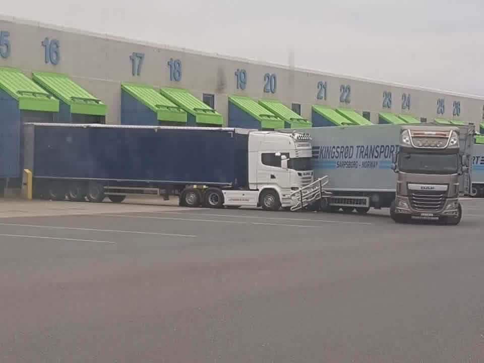

🚛 TRUCKER TOKEN (TKR)
A token, ami végre rólad szól.
A token, ami végre rólad szól.
Hajnal fél három. Álmosan elfordítod a kulcsot. A kamion rendszerébe levegőt termelsz. Korom sötét van. De neked már indul a nap.
Ma is spanifer-mérgezés. Ma is egy újabb vita a nagyképű, a maga fontosságától eltelt targoncással. Az izzadság és a gumi Clocksos három napos büdös zoknis lábszag keveréke a svájci határ szűk vámfolyosóján, a sorban állva.
Tele a tököd a kriptós szarságokkal, amiket úgysem értesz. De azt látod, hogy mások meggazdagodnak belőle. Te meg csak rázod a fejed: "Ez is csak egy újabb kamu."
A főnököd forint-baszó. Még az utolsó napon is elküld még egy körre, hogy neki kijöjjön a matek. Téged meg le se szar.
De ettől még – megcsinálod. Mert tudod: ha nem, holnap lehet, hogy nincs munka. Mert pótolhatatlan ember nincs. Ez a valóság. A TE valóságod.
És szerinted nem lenne itt az ideje, hogy ezen változtass?
De mi is az az Airdrop?! Egyfajta ajándék – ha úgy tetszik, jutalomtoken.
Azért jár, mert itt vagy. Mert egy levegőt szívsz velünk. Akarod? Na akkor csináljuk!
Ez nem fosbúkos Koleka-problem story. Itt MI vagyunk. Te és én, és még rengetegen, akik megértették, hogy a saját kezükbe kell venni a sorsuk irányítását.
A Trucker Token nem egy szép duma. Ez valós közösségi háttér – kamionosoknak, kamionosoktól.
A Trucker Token (TKR) egy Solana-alapú SPL token, rögzített mennyiséggel, lezárt jogosultságokkal. Nincs több utólagos trükk, nincs titkos átírás – ez nem rug pull, hanem komoly játék.
A teljes tokenstruktúra, airdrop szabályok, kereskedési elvek: publikusan elérhető, olvasható, leellenőrizhető.
Ez nem tündérmese – ez a valóság. És végre neked szól.